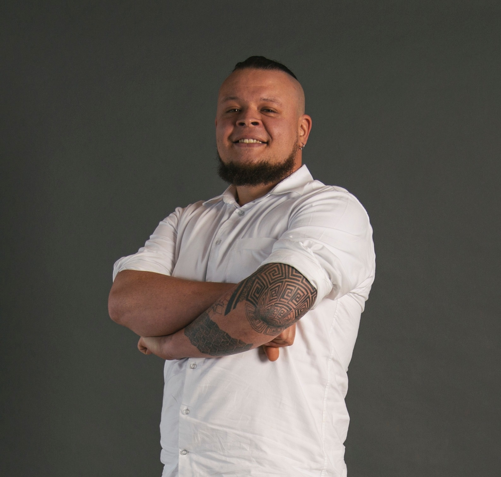

Sergio Andrés Monsalve Castañeda

Personal Information
Date of Birth:
June 10th 1986.
Place of Birth:
Medellín, Colombia.
Education
December, Candidate Master of Science in Engineering EAFIT University, Medellín, Colombia, GPA –
2022 4.49/5.0.
December, Systems Engineering, EAFIT University, Medellín, Colombia, GPA – 3.94/5.0.
2013
December, High-school, Colegio La Salle de Envigado , Envigado, Colombia.
2003
About me
https://www.linkedin.com/in/samonsalvec/
https://github.com/smonsalve
Profile
I am a systems engineer with hunger for knowledge and avid to learn new technologies,
tools, programming languages and frameworks to create solutions for everyday problems.
I enjoy working in multidisciplinary teams and face challenges that allow the growth of
the team itself, as well as the improvement of the developed products or services.
Calle 25 A Sur # 42 B-61 apt 503– Envigado, Antioquia
H (350) 8025988 @ • B smonsalve@gmail.com, smonsal3@eafit.edu.coExperience
2021–2022 Founder and CITO, humanld.io, Medellín, Colombia.
ML, AI, Data Analytics, Data Visualization, and Data Driven Client Segmentation and general
Marketing Strategies Development.
Detailed achievements:
Sistecredito Dashboards for Clients and Customers
Sura/Comfama atention optimization for High Risk Cardio Vascular patients
2020–Present CITO, Inmotion Group, Medellín, Colombia.
Developers Team Management, Leading and structuring projects, Software Development, Data
Analytics, Data Viz.
Detailed achievements:
Corporate sustainable mobility dashboard and tools.
Hex Mobility payment integration.
2017–2020 Data Analyst, Leonisa, Medellín, Colombia.
Data Analytics, Data Visualization, and Data Driven Client Segmentation and general
Marketing Strategies Development.
Detailed achievements:
Architectural Development of the Leonisa loyalty program.
Leader of the Tableau Analytics Group.
2018–Present Teacher, continuing education center, EAFIT University, Medellín,
Colombia.
Basic Python Programming.
2016–2018 Adjunct Teacher, EAFIT University, Medellín, Colombia.
Computer programming for engineering.
2014–2019 Outdoor training Instructor, DEPP (Professional Trainee Department)
EAFIT University, Medellín, Colombia.
Experiential education program.
2016–2017 Freelance Developer, Inmotion Group, Medellín, Colombia.
Platform development for an automatic electrical bicycle lending system.
2014–2017 Developer and Researcher, EAFIT University, Medellín, Colombia.
Developer and researcher at the Applied Mathematics department for the prevention and
prediction of dengue disease project.
2013–2014 Consultant at Center for the Innovation, Consulting and Entrepreneurship, EA-
FIT University, Medellín, Colombia.
Software Architectural development for an intelligent portal at Medellín Digital.
2012 Ruby on Rails Developer, Odesk Freelancer , Medellín, Colombia.
Tailored developments for different clients.
2011 Partial Time Developer, Mercadeo Virtual S.A, Medellín, Colombia.
Developing of a System for administration of student’s laboratory equipment.
Calle 25 A Sur # 42 B-61 apt 503– Envigado, Antioquia
H (350) 8025988 •@ B smonsalve@gmail.com, smonsal3@eafit.edu.coAchievements
2013 Full scholarship for the Master of Science in Engineering Degree, based on the thesis
Graph Analysis with Parallel Boost Graph Library at Apolo (High Performance Compu-
ting facility) for the undergraduate program in Systems Engineering. EAFIT University
2013.
2013 SURF: Summer Undergraduate Research Fellowship. Purdue University West
Lafayette, Indiana, USA. Research on Nano Mechanics simulations group.
2012 President of the Students Organization. EAFIT University.
2011–2012 Student Representative Directive Council. EAFIT University.
2010–2011 VP for Social and Integral Formation at the Students Organization. EAFIT University.
Computer skills
- I have developed Web and stand alone applications in Python and Ruby.
- I have done web development with teams using Ruby on Rails and Flask, Django with basic JavaScript, HTML, and CSS.
- I have made web deployment on Linux Web servers as Amazon, Google Cloud, Heroku, Digital Ocean, and others.
- I have used Embedded Systems as Arduino and Raspberry Pi IoT solutions.
- I have used Python, Plotly and Dash for Data Analytics, Data Visualization and Data Exploration and solutions.
- I have used Tableau for Data Analytics as Data Visualization and Data Exploration tool
Extracurricular Activities
2011-2015 Leader and director of the Embedded Systems Research and Study Group SISE
2007-2012 Programming Group founder, EAFIT University.
2005-2012 Director for different academic, cultural, recreational and social activities at the Student
Organization at EAFIT University such as the photography contest at DIAS EAFIT
2009, the National Student Congress of Systems Engineering, CNEIS 2007, and others.
2004-2012 Associate at the System Engineering improvement Group (GEMIS-OE).
Languages
Spanish Native
English Professional Proficiency
TOEIC 940/990
Interests
- MTB
- Cooking
- Hiking
- Reading
Calle 25 A Sur # 42 B-61 apt 503– Envigado, Antioquia
H (350) 8025988 •@ B smonsalve@gmail.com, smonsal3@eafit.edu.co- Paragliding
- Gardening
Contacts
Daniel Mesa, CEO in Human Living Data, daniel@humanld.io, (+57) 312 2570815 .
Esteban Restrepo, Data Analytics Director at Leonisa Group, estebanrestre-
po86@gmail.com, (+57) 310 841 60 12.
Juan Guillermo Lalinde Pulido, Ph.D., Associate Professor at EAFIT University ,
jlalinde@eafit.edu.co, (+57) 311 349 81 74.
Calle 25 A Sur # 42 B-61 apt 503– Envigado, Antioquia
H (350) 8025988 •@ B smonsalve@gmail.com, smonsal3@eafit.edu.co